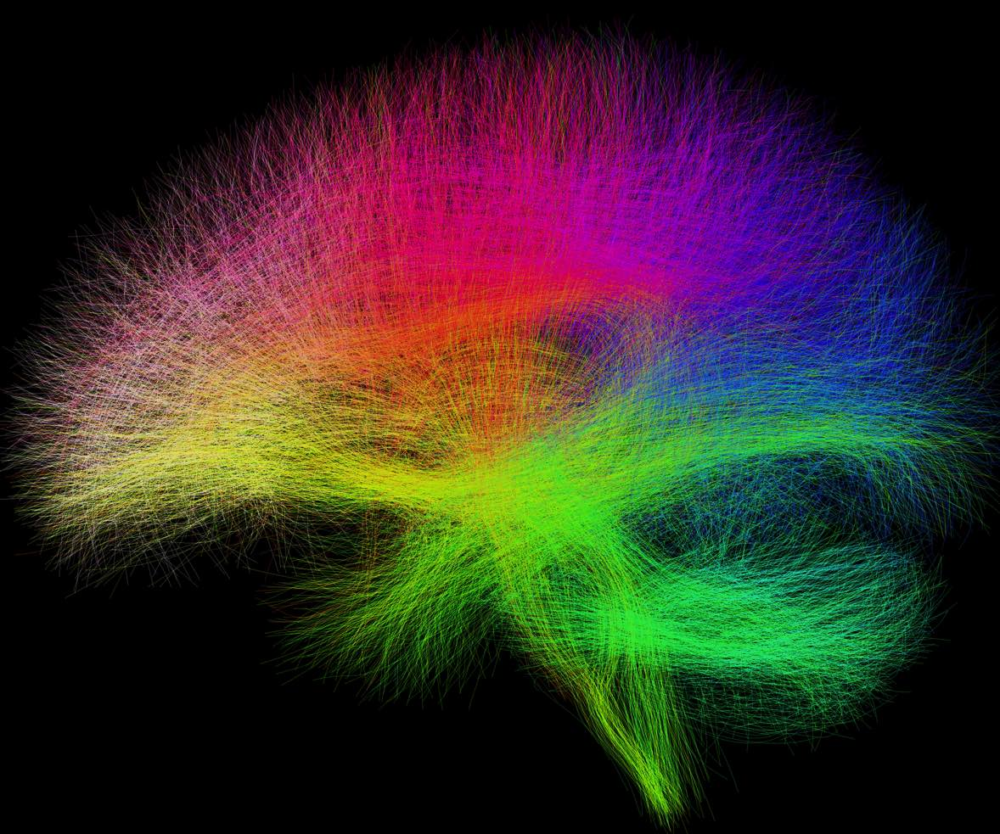
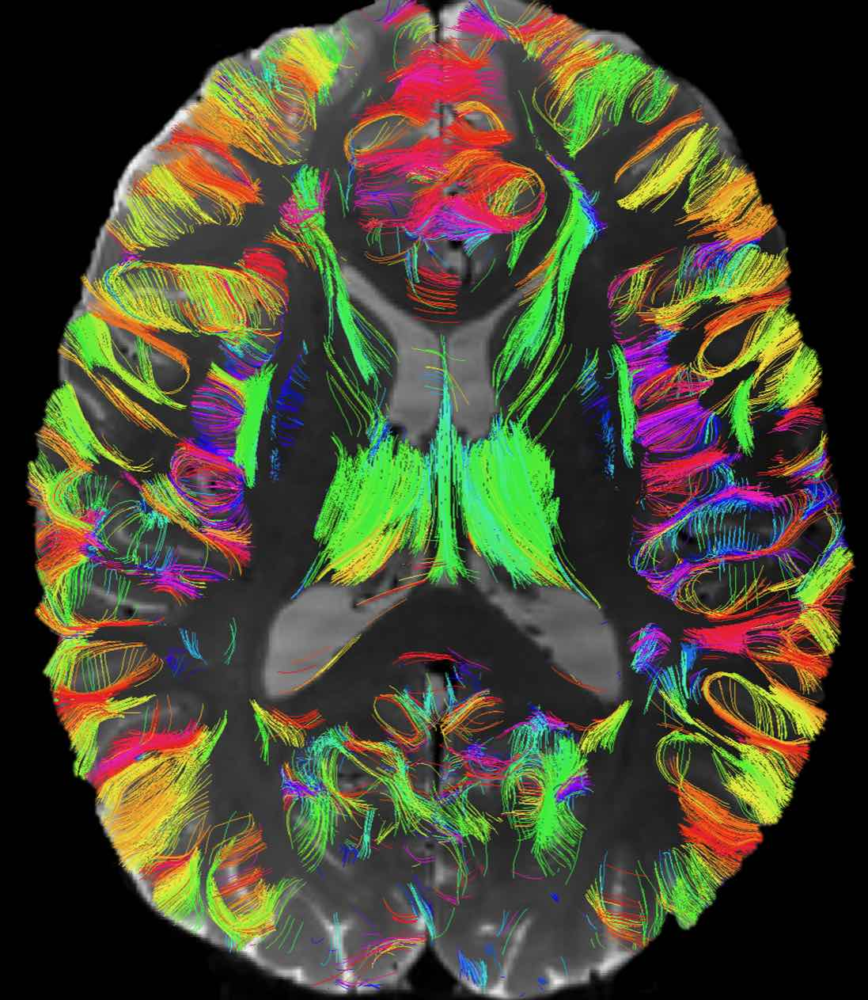
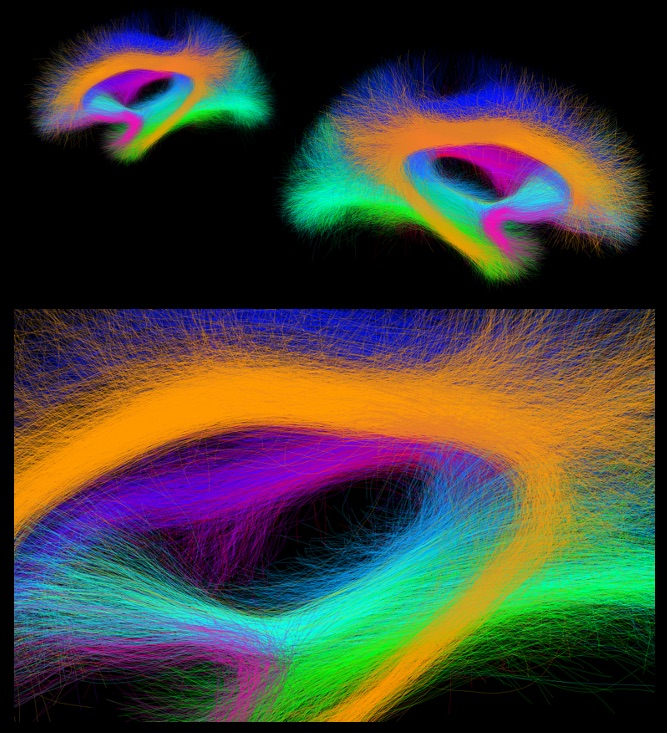
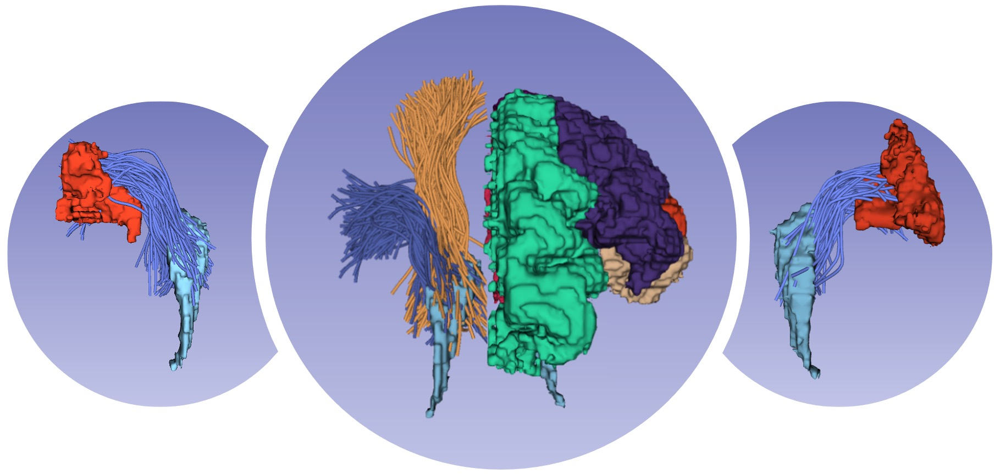
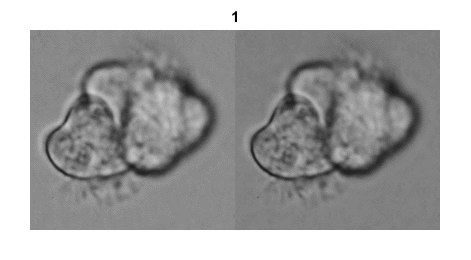

Fan Zhang, PhD
I am currently a Professor at the University of Electronic Science and Technology of China (UESTC) and an national young talent. From 2015 to 2023, I was a visiting scholar, a postdoctoral researcher, and then a faculty member at Harvard Medical School (HMS) in the USA. In 2016, I received my PhD degree in Computer Science from The University of Sydney (USYD) in Australia, with a highly competitive International Postgraduate Research Scholarship (IPRS) and Australian Postgraduate Awards (APA), as well as a China Scholarship Council Award for Outstanding Self-Financed Students Abroad. Prior to that, in 2013, I obtained a Master's degree in Information Technology at USYD, with an award of the Dean’s List of Excellence in Academic Performance and an SIT Prize for the Best Research Project. In 2013, I also obtained a Master's degree in Computer Applied Technology at the Dalian University of Technology (DUT) (with a postgraduate recommendation), after my Bachelor’s degree in Software Engerning at DUT in 2010 (with Outstanding Academic Performance Scholarship in each school year).
Email / Google Scholar / CV
News
Postdoc, PhD/master and research assistant positions, and a few undergraduate summer projects are available. Please contact me if you are interested: fan.zhang at uestc.edu.cn
Research Interests
My research focuses on developing advanced AI-based technologies for medical image analysis and neuroimage computing, with the goal of providing clinicians with the tools and information needed to make accurate diagnoses and to guide effective treatments, ultimately improving patient outcomes and quality of life. My research interests generally include:
I have published over 120 peer-reviewed papers in leading international journals and proceedings at top international conferences such as MedIA, IEEE TMI, IEEE TBME, NeuroImage, Molecular Psychiatry, Human Brain Mapping, MICCAI, IJCAI, CVPR, ICCV and ISBI. A full list of my publications can be seen from my Google Scholar. I am Associate Editor for Frontiers in Radiology, Editorial Board Member of Meta-Radiology and Brain-X, and an Area Chair for MICCAI 2023. I was an organizer of the CDMRI Workshops (2019, 2020) and the MUDI and Super-MUDI Challenges. I am a regular reviewer for over 40 journals and conferences such as MedIA, IEEE TMI, MICCAI, ISBI, and ICASSP.
My close collaborators and mentors include the Lab of Advanced Visual Communications & Computing (AVC2) at UESTC, the O’Donnell Laboratory, the Neuroscience Image Computing (NIC) Laboratory, the Laboratory of Mathematics in Imaging (LMI), the Surgical Planning Laboratory (SPL), the Golby Lab, and the Psychiatry Neuroimaging Laboratory (PNL) at Harvard Medical School, the Multimedia Laboratory Biomedical & Multimedia Infomation Technology (BMIT) Research Group at the University of Sydney, and Dr. Song's group at the University of New South Wales.
Highlighted Projects
Computational Diffusion MRI
Diffusion MRI is an advanced imaging technique that measures the random motion or diffusion of water molecules, providing unique measurements sensitive to the structure of living tissue at the micrometer scale. My colleagues and I have designed several novel AI-based methods for tasks such as dMRI denoising, registration, and segmentation. I am also an organizer of the MICCAI Computational Diffusion MRI (CDMRI) Workshop (2019, 2020), one of the prestigious conferences in the diffusion MRI community that aims to promote technical development and clinical usage of diffusion MRI. Some of the related work include:
- Fan Zhang, William M Wells, and Lauren J O'Donnell. Deep Diffusion MRI Registration (DDMReg): A Deep Learning Method for Diffusion MRI Registration. IEEE Transactions on Medical Imaging 41(6): 1454-1467, 2022.
- Fan Zhang, Suheyla Cetin-Karayumak, Steve Pieper, Yogesh Rathi, and Lauren J. O'Donnell. Consistent White Matter Parcellation in Adolescent Brain Cognitive Development (ABCD): A ~10k Harmonized Diffusion MRI Study. ISMRM, pp. 3306, 2022.
- Fan Zhang, Anna Breger, Kang Ik Kevin Cho, Lipeng Ning, Carl-Fredrik Westin, Lauren J O'Donnell, and Ofer Pasternak. Deep learning based segmentation of brain tissue from diffusion MRI. NeuroImage 233: 117934, 2021.
- Noemi Gyori, Jana Hutter, Vishwesh Nath, Marco Palombo, Marco Pizzolato, and Fan Zhang (Editors). Computational Diffusion MRI. MICCAI Workshop, Lima, Peru. Springer, 2021.
- Elisenda Bonet-Carne, Jana Hutter, Marco Palombo, Marco Pizzolato, Farshid Sepehrband, Fan Zhang (Editors). Computational Diffusion MRI. MICCAI Workshop, Shenzhen, China. Springer, 2020.
- Marco Pizzolato, Marco Palombo, Elisenda Bonet-Carne, … , Farshid Sepehrband, Fan Zhang, Jana Hutter. Acquiring and predicting multidimensional diffusion (MUDI) data: an open challenge. MICCAI Computational Diffusion MRI Workshop, 2019.
- Fan Zhang, Lipeng Ning, Lauren J O'Donnell, and Ofer Pasternak. MK–curve: Characterizing the relation between mean kurtosis and alterations in the diffusion MRI signal. NeuroImage 196: 68–80, 2019.
Tractography and Brain Atlasing
Tractography is currently the only technique that enables in vivo mapping of the white matter connections in living brains. Over the last two decades, the study of the human brain using tractography has played a prominent role in the neuroimaging research landscape. We have developed novel computational tools for tractography analysis with a focus on improving our understanding of brain structure and function mapping. In particular, we have created a data-driven tractography atlas (the ORG atlas), which is currently one of the most comprehensive white matter tract atlases. Some of the selected publications include:
- Fan Zhang#, Alessandro Daducci, Yong He, Simona Schiavi, Caio Seguin, Robert Smith, Chun-Hung Yeh, Tengda Zhao, and Lauren J O'Donnell#. Quantitative mapping of the brain's structural connectivity using diffusion MRI tractography: a review. NeuroImage 249: 118870, 2022. (Invited Review)
- Leo Zekelman*, Fan Zhang* , Nikos Makris, Jianzhong He, Yuqian Chen, Tengfei Xue, Daniela Liera, Daniel L. Drane, Yogesh Rathi, Alexandra J. Golby, and Lauren J. O'Donnell. White Matter Association Tracts Underlying Language and Theory of Mind: An investigation of 809 Brains from the Human Connectome Project. NeuroImage 246: 118739, 2022.
- Jianzhong He*, Fan Zhang*, Guoqiang Xie, Shun Yao, Yuanjing Feng, Dhiego CA Bastos, Yogesh Rathi, Nikos Makris, Ron Kikinis, Alexandra J Golby, and Lauren J. O'Donnell. Comparison of multiple tractography methods for reconstruction of the retinogeniculate visual pathway using diffusion MRI. Human Brain Mapping 42(12): 3887-3904, 2021.
- Fan Zhang, Guoqiang Xie, Laura Leung, Michael Mooney, Lorenz Epprecht, Isaiah Norton, Yogesh Rathi, Ron Kikinis, Ossama Al-Mefty, Nikos Makris, Alexandra J. Golbya, and Lauren J. O’Donnell. Creation of a novel trigeminal tractography atlas for automated trigeminal nerve identification. NeuroImage 220: 117063, 2020.
- Guoqiang Xie*, Fan Zhang*, Laura Leung, Michael A Mooney, Lorenz Epprecht, Isaiah Norton, Yogesh Rathi, Ron Kikinis, Ossama Al-Mefty, Nikos Makris, Alexandra J Golby, and Lauren J O'Donnell. Anatomical assessment of trigeminal nerve tractography using diffusion MRI: A comparison of acquisition b-values and single-and multi-fiber tracking strategies. NeuroImage: Clinical 25: 102160, 2020.
- Fan Zhang, Ye Wu, Isaiah Norton, Yogesh Rathi, Nikos Makris, and Lauren J. O'Donnell. An anatomically curated fiber clustering white matter atlas for consistent white matter tract parcellation across the lifespan. NeuroImage 179: 429-447, 2018.
Fiber Tract Segmentation
Fiber tract segmentation is to identify fiber pathways that are meaningful for quantification and visualization of the brain’s structural connections. It allows tract-specific research that is typically hypothesis-driven and studies particular anatomical fiber tracts, and also connectome-based research that is usually data-driven and studies the structural connectivity of the entire brain. We have designed several machine/deep learning methods for fast and consistent fiber tract segmentation. Our methods have achieved highly advanced performance, for the first time, enabling consistent identification of white matter tracts across the lifespan and different disease populations. Some of the selected publications include:
- Sipei Li, Jianzhong He, Tengfei Xue, Guoqiang Xie, Shun Yao, Yuqian Chen, Erickson Torio, Yuanjing Feng, Dhiego CA Bastos, Yogesh Rathi, Nikos Makris, Ron Kikinis, Wenya Linda Bi, Alexandra J Golby, Lauren J O'Donnell, Fan Zhang. DeepRGVP: A Novel Microstructure-Informed Supervised Contrastive Learning Framework for Automated Identification Of The Retinogeniculate Pathway Using dMRI Tractography. ISBI, accepted, 2023.
- Tengfei Xue, Fan Zhang#, Chaoyi Zhang, Yuqian Chen, Yang Song, Alexandra J. Golby, Nikos Makris, Yogesh Rathi, Weidong Cai, and Lauren J. O’Donnell#. Superficial White Matter Analysis: An Efficient Point-Cloud-Based Deep Learning Framework with Supervised Contrastive Learning for Consistent Tractography Parcellation across Populations and dMRI Acquisitions. Medical Image Analysis 85: 102759, 2023.
- Yuqian Chen, Chaoyi Zhang, Yang Song, Nikos Makris, Yogesh Rathi, Weidong Cai, Fan Zhang#, and Lauren J O'Donnell. Deep Fiber Clustering: Anatomically Informed Unsupervised Deep Learning for Fast and Effective White Matter Parcellation. MICCAI, pp.497-507, 2021. (MICCAI Student Travel Award; Early accepted)
- Fan Zhang, Suheyla Cetin Karayumak, Nico Hoffmann, Yogesh Rathi, Alexandra J Golby, and Lauren J O'Donnell. Deep white matter analysis (DeepWMA): fast and consistent tractography segmentation. Medical Image Analysis 65: 101761, 2020.
- Fan Zhang, Ye Wu, Isaiah Norton, Yogesh Rathi, Alexandra J Golby, and Lauren J O'Donnell. Test–retest reproducibility of white matter parcellation using diffusion MRI tractography fiber clustering. Human Brain Mapping 40:10, 3041–3057, 2019.
- Fan Zhang, Isaiah Norton, Weidong Cai, Yang Song, William M. Wells III, and Lauren J. O'Donnell. Comparison between two white matter segmentation strategies: an investigation into white matter segmentation consistency. ISBI, 796-799, 2017. (NIH/NIBIB Travel Award)
Study of Mental Health
Computational neuroimaging has shown great potential in mental health, for example, to understand neurodevelopment and aging, to study neuropathology in a variety of brain diseases, and to provide diagnostic information for the early detection of brain disorders. We have proposed novel data analysis methods and imaging features to investigate various problems in the field, including disease classification and between-population statistical analysis. Some of the selected publications include:
- Zhang, Fan, Tengfei Xue, Weidong Cai, Yogesh Rathi, Carl-Fredrik Westin, and Lauren J. O’Donnell. TractoFormer: A Novel Fiber-Level Whole Brain Tractography Analysis Framework Using Spectral Embedding and Vision Transformers. MICCAI, pp.196-206, 2022.
- Shuyue Wang*, Fan Zhang*, Peiyu Huang, Hui Hong, Yeerfan Jiaerken, Xinfeng Yu, Ruiting Zhang, Qingze Zeng, Yao Zhang, Ron Kikinis, Yogesh Rathi, Nikos Makris, Min Lou, Ofer Pasternak, Minming Zhang, Lauren J. O'Donnell. Superficial white matter microstructure affects processing speed in cerebral small vessel disease. Human Brain Mapping 43:17, 5310-5325, 2022.
- Fan Zhang, Kang Ik Kevin Cho, Yingying Tang, Tian Hong Zhang, Sinead Kelly, Maria Di Biase, Lihua Xu, Huijun Li, Keshevan Matcheri, Susan Whitfield, Margaret Niznikiewicz, William Stone, Jijun Wang, Martha Shenton, and Ofer Pasternak. MK-Curve improves sensitivity to identify white matter alterations in clinical high risk for psychosis. NeuroImage 226: 117564, 2021.
- Fan Zhang, Weining Wu, Lipeng Ning, Gloria McAnulty, Deborahand Waber, Borjan Gagoski, Kiera Sarill, Hesham Hamoda, Yang Song, Weidong Cai, Yogesh Rathi, and Lauren J. O'Donnell. Suprathreshold fiber cluster statistics: Leveraging white matter geometry to enhance tractography statistical analysis. NeuroImage 171: 341-354, 2018.
- Fan Zhang, Peter Savadjiev, Weidong Cai, Yang Song, Yogesh Rathi, Birkan Tunç, Drew Parker, Tina Kapur, Robert T. Schultz, Nikos Makris, Ragini Verma, and Lauren J. O'Donnell. Whole brain white matter connectivity analysis using machine learning: an application to autism. NeuroImage 172: 826-837, 2018.
- Ye Wu*, Fan Zhang*, Nikos Makris, Yuping Ning, Isaiah Norton, Shenglin She, Hongjun Peng, Yogesh Rathi, Yuanjing Feng, Huawang Wu, and Lauren J. O'Donnell. “Investigation into local white matter abnormality in emotional processing and sensorimotor areas using an automatically annotated fiber clustering in major depressive disorder. NeuroImage 181: 16-29, 2018.
Neurosurgical Brain Mapping
Neurosurgical brain mapping aims to identify critical brain regions and neural pathways that are involved in specific functions such as motor, language, or sensory processing. This is done to help neurosurgeons plan and perform surgical procedures, to preserve as much of these critical functions as possible while removing or treating the underlying neurological condition. We have developed novel methods for the accurate mapping of important brain structures such as the cortical surface and white matter connections, despite the mass effect caused by lesions. Some of the selected publications include:
- Fan Zhang, Thomas Noh, Parikshit Juvekar, Sarah F. Frisken, Laura Rigolo, Isaiah Norton, Tina Kapur, Sonia Pujol, William Wells, Alex Yarmarkovich, Gordon Kindlmann, Demian Wassermann, Raul San Jose Estepar, Yogesh Rathi, Ron Kikinis, Hans J. Johnson, Carl-Fredrik Westin, Steve Pieper, Alexandra J. Golby, and Lauren J. O'Donnell. SlicerDMRI: Diffusion MRI and Tractography Research Software for Brain Cancer Surgery Planning and Visualization. JCO Clinical Cancer Informatics 4: 299–309, 2020.
- Shun Gong*, Fan Zhang*, Isaiah Norton, Walid I Essayed, Prashin Unadkat, Laura Rigolo, Ofer Pasternak, Yogesh Rathi, Lijun Hou, Alexandra J Golby, and Lauren J. O'Donnell. “Free water modeling of peritumoral edema using multi-fiber tractography: Application to tracking the arcuate fasciculus for neurosurgical planning. PloS one 13(5): e0197056, 2018.
- Lauren J. O'Donnell, Yannick Suter, Laura Rigolo, Pegah Kahali, Fan Zhang, Isaiah Norton, Angela Albi, Olutayo Olubiyi, Antonio Meola, Walid I Essayed, Prashin Unadkat, Pelin Aksit Ciris, William M. Wells III, Yogesh Rathi, Carl-Fredrik Westin, and Alexandra J. Golby. Automated white matter fiber tract identification in patients with brain tumors. NeuroImage: Clinical 13: 138–153, 2017.
- Fan Zhang, Pegah Kahali, Yannick Suter, Isaiah Norton, Laura Rigolo, Peter Savadjiev, Yang Song, Yogesh Rathi, Weidong Cai, William M. Wells III, Alexandra J. Golby, and Lauren J. O'Donnell. Automated Connectivity-Based Groupwise Cortical Atlas Generation: Application to Data of Neurosurgical Patients with Brain Tumors for Cortical Parcellation Prediction. ISBI, pp. 774-777. (NIH/NIBIB Travel Award)
- Walid I. Essayed, Fan Zhang, Prashin Unadkat, G. Rees Cosgrove, Alexandra J. Golby, and Lauren J. O'Donnell. White matter tractography for neurosurgical planning: A topography-based review of the current state of the art. NeuroImage: Clinical 15: 659-672, 2017.
- Sidong Liu, Yang Song, Fan Zhang, Dagan Feng, Michael Fulham, and Weidong Cai. Clique Identification and Propagation for Multimodal Brain Tumor Image Segmentation. BIH, pp. 285–294. 2016. (BIH 2016 Best Paper Award)
General Medical Image Computing
Driven by the interest in solving underlying challenges in general, we have also worked on various cutting-edge medical imaging tasks such as image segmentation, registration, classification, and retrieval, on a variety of imaging modalities including MRI, PET, CT, and Microscopy. Some of the selected publications include:
- Dongnan Liu, Donghao Zhang, Yang Song, Fan Zhang, Lauren O'donnell, Heng Huang, Mei Chen, and Weidong Cai. Unsupervised Instance Segmentation in Microscopy Images via Panoptic Domain Adaptation and Task Re-weighting. CVPR, pp. 4242-4251, 2020.
- Dongnan Liu, Donghao Zhang, Yang Song, Chaoyi Zhang, Fan Zhang, Lauren O'Donnell, and Weidong Cai. 2019. Nuclei Segmentation via a Deep Panoptic Model with Semantic Feature Fusion. IJCAI, 861–868, 2019.
- Fan Zhang, Yang Song, Weidong Cai, Sidong Liu, Siqi Liu, Sonia Pujol, Ron Kikinis, Yong Xia, Michael J Fulham, and David Dagan Feng. Pairwise latent semantic association for similarity computation in medical imaging. IEEE Transactions on Biomedical Engineering 63(5): 1058–1069, 2016.
- Fan Zhang, Yang Song, Weidong Cai, Alexander G Hauptmann, Sidong Liu, Sonia Pujol, Ron Kikinis, Michael J Fulham, David Dagan Feng, and Mei Chen. Dictionary pruning with visual word significance for medical image retrieval. Neurocomputing 177: 75–88, 2016.
- Fan Zhang, Yang Song, Siqi Liu, Paul Young, Daniela Traini, Lucy Morgan, Hui-Xin Ong, Lachlan Buddle, Sidong Liu, David Dagan Feng, and Weidong Cai. Motion Representation of Ciliated Cell Images with Contour-Alignment for Automated CBF Estimation. MICCAI, pp. 300–307, 2015. (Student Travel Award)
- Fan Zhang, Yang Song, Weidong Cai, Min-Zhao Lee, Yun Zhou, Heng Huang, Shimin Shan, Michael J Fulham, and Dagan D Feng. Lung nodule classification with multilevel patch-based context analysis. IEEE Transactions on Biomedical Engineering 61(4): 1155–1166, 2014.
Collaborative Work
I have closely collaborated with researchers in many international institutes, to name a few, such as Harvard, MIT, MGH, and BCH in the US; USYD, UNSW, and Unimelb in Australia; LMU and UCL in Europe, as well as many national institutes such as JTU, SJTU, ZJUT and SYSU in China. We have been collaborating on a variety of clinical and research applications and produced many impactful outputs. Some of our collaborative publications include:
- James Levitt, Fan Zhang, Mark Vangel, Paul Nestor, Yogesh Rathi, Suheyla Cetin-Karayumak, Marek Kubicki, Michael Coleman, Kathryn Lewandowski, Daphne Holt, Matcheri Keshavan, Dost Ongur, Alan Breier, Martha Shenton, Lauren J. O'Donnell. The Organization of Frontostriatal Brain Wiring in Non-Affective Early Psychosis Compared with Healthy Subjects Using a Novel Diffusion Imaging Fiber Cluster Analysis. Molecular Psychiatry, accepted, 2023.
- Philine Rojczyk, Johanna Seitz-Holland, Elisabeth Kaufmann, Valerie J Sydnor, Cara L Kim, Lisa F Umminger, Tim LT Wiegand, Jeffrey P Guenette, Fan Zhang, Yogesh Rathi, Sylvain Bouix, Ofer Pasternak, Catherine B Fortier, David Salat, Sidney R Hinds, Florian Heinen, Lauren J O’Donnell, William P Milberg, Regina E McGlinchey, Martha E Shenton, Inga K Koerte. Sleep Quality Disturbances Are Associated with White Matter Alterations in Veterans with Post-Traumatic Stress Disorder and Mild Traumatic Brain Injury. Journal of Clinical Medicine 12(5): 2079, 2023.
- Linda Hoffman, Chi Ngo, Kelsey Canada, Ofer Pasternak, Fan Zhang, Tracy Riggins, and Ingrid R. Olson. The fornix supports episodic memory during childhood. Cerebral Cortex 32(23): 5388-5403, 2022.
- David J Robles, Ammar Dharani, Kenneth A Rostowsky, Nikhil N Chaudhari, Van Ngo, Fan Zhang, Lauren J O’Donnell, Lauren Green, Nasim Sheikh-Bahaei, Helena C Chui, and Andrei Irimia. Older age, male sex, and cerebral microbleeds predict white matter loss after traumatic brain injury. GeroScience 44(1): 83-102, 2022.
- Xinfeng Yu, Xinzhen Yin, Hui Hong, Shuyue Wang, Yeerfan Jiaerken, Fan Zhang, Ofer Pasternak, Ruiting Zhang, Linglin Yang, Min Lou, Minming Zhang, and Peiyu Huang. Increased extracellular fluid is associated with white matter fiber degeneration in CADASIL: in vivo evidence from diffusion magnetic resonance imaging. Fluids and Barriers of the CNS 18: 29, 2021.
- Alik S. Widge, Fan Zhang, Aishwarya Gosai, George Papadimitrou, Peter Wilson-Braun, Magdalini Tsintou, Senthil Palanivelu, Angela M. Noecker, Cameron C. McIntyre, Lauren O'Donnell, Nicole C.R. McLaughlin, Benjamin D. Greenberg, Nikolaos Makris, Darin D. Dougherty, and Yogesh Rathi. Patient-Specific Connectomic Models Correlate With, But Do Not Predict, Outcomes in Deep Brain Stimulation for Obsessive-Compulsive Disorder. Neuropsychopharmacology 47(4): 965-972, 2021.
- Jingqiang Wang, Fan Zhang, Changchen Zhao, Qingrun Zeng, Jianzhong He, Lauren J O'Donnell, and Yuanjing Feng. Investigation of local white matter abnormality in Parkinson's disease by using an automatic fiber tract parcellation. Behavioural Brain Research 394: 112805, 2020.
Software and Open-source
In scientific research, software development and open source are important because they promote reproducibility, collaboration, efficiency, transparency, and accessibility. In particular in medical image computing, by providing a common platform for scientific and clinical researchers to work together, open-source software can lead to more impactful and innovative research. I have contributed to this aspect of research by participating in the development of SlicerDMRI and actively maintaining our open-source code repositories. Some of the software and open-source tools are available at:
Artwork Gallary

Mapping of whole brain white matter, created by Fan Zhang, selected as the page banner of Harvard Brain Science Initiative website.

Mapping of superficial white matter, created by Fan Zhang, one of the winning images at the 2022 Beauty of the Brain image contest.

Mapping of association fiber tracts (Zekelman et al. NeuroImage 2022), created by Leo Zekelman, selected as the cover image of Neuroimage, Volume 246.

3D visualization of example tracts in the ORG atlas (Zhang et al. NeuroImage 2018), created by Fan Zhang. Visit our atlas page for the full visualization.

Mapping of grontostriatal white mater connections (Levitt et al. Cerebral Cortex 2021), created by James Levitt and Fan Zhang, selected as the cover image of Cerebral Cortex, Volume 32, Issue 21.

Motion correction of ciliated cell images (left: orginal vs right: corrected) (Zhang et al. MICCAI 2025), created by Fan Zhang.
This webpage was adapted based on the following template.